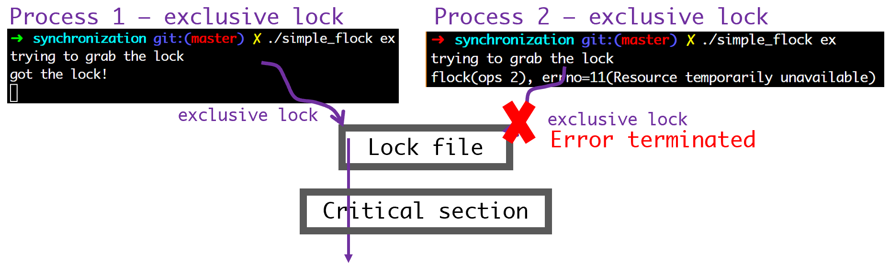

파일을 이용한 동기화
파일을 이용한 동기화
- Race condition(경쟁 상태)
- 둘 이상의 프로세스/Thread가 동시에 어떤 작업을 수행 시, 타이밍 등에 의해 의도치 않은 결과가 나올 수 있는 상태
- Critical Section(임계 영역)
- 둘 이상의 프로세스/Thread가 동시에 접근하면 안되는 공유데이터를 접근하는 코드 영역
- 즉, Race Condition을 발생 시킬 수 있는 코드 영역

- Race condition을 해결하기 위한 간단한 방법: Lock mechanism
- Thread가 critical section code에 진입할 수 있는 열쇠를(Lock을 획득) 얻어야 Critical section code에 진입할 수 있다.
- Thread가 critical section code에 진입할 수 있는 열쇠를(Lock을 획득) 얻어야 Critical section code에 진입할 수 있다.
- 파일을 이용한 동기화에서는 파일 디스크립터(fd)가 lock의 역할을 한다.
#include <sys/file.h>
int flock(int fd, int operation);
| return | value |
| 성공 | 0 |
| 실패 | -1 |
| parameter | Description |
| fd | 파일 디스크립터 |
| operation | LOCK_SH: shared lock 걸기 - 여러개의 프로세스(스레드)가 lock을 획득 할 수 있다. LOCK_EX: exclusive lock 걸기 -어느 프로세스(스레드)가 lock을 소유한다면 다른 프로세스(스레드)는 lock을 획득 할 수 없다. LOCK_UN: lock 풀기 shared, exclusive 둘다 풂 LOCK_NB: non-block(획득에 실패한 P/T는 대기아닌 바로 Error Return-errno 필요). 다른 값과 ORing(|)하여 사용 |
| shared lock 획득 시도 | exclusive lock 획득 시도 | |
| lock 없음 | 즉시 성공 | 즉시 성공 |
| 어떤 프로세스/스레드에 의해 shared locked 상태 |
즉시 성공 | 모든 shared lock이 풀릴 때까지 대기 |
| 어떤 프로세스/스레드에 의해 exclusive lock 상태 |
exclusive lock이 풀릴 때까지 대기 | exclusive lock이 풀릴 때까지 대기 |
ex 1. simple_flock.c
#include <stdio.h>
#include <sys/file.h>
#include <string.h>
#include <stdlib.h>
#include <unistd.h>
#include <errno.h>
#define NON_BLOCK 1
static void print_usage(char *progname){
printf("usage: %s {ex | sh}\nex: exclussive lock\nsh: shared lock\n", progname);
exit(-1);
}
int main(int argc, char *argv[]){
int fd;
int ops;
if(argc<2){
print_usage(argv[0]);
}
if(!strcmp(argv[1], "sh")){
ops = LOCK_SH;
} else if (!strcmp(argv[1], "ex")){
ops = LOCK_EX;
} else{
print_usage(argv[0]);
}
fd=open("lockfile", O_RDWR | O_CREAT, 0600);
if(fd<0){
perror("open fail\n");
return -1;
}
printf("trying to grab the lock\n");
#if NON_BLOCK == 0
if(flock(fd, ops){ // Lock
printf("flock(ops %d)\n", ops);
goto out;
}
#elif NON_BLOCK == 1
if(flock(fd, ops | LOCK_NB)!=0){ // Lock
printf("flock(ops %d), errno=%d(%s)\n", ops, errno, strerror(errno));
goto out;
}
#endif
printf("got the lock!\n");
int ch=getc(stdin); // Wait for inserting key from User.
if(flock(fd, LOCK_UN)!=0){ // Unlock
printf("flock(unlock)\n");
goto out;
}
printf("unlock!\n");
return 0;
out:
close(fd);
return -1;
}
- 두 Process 모두 Shared Lock grab 시도
- 두 Process 모두 lock 소유 가능
- 두 Process 모두 critical section에 들어와있다.
- P1 Shared Lock 먼저 lock획득, P2 Exclusive Lock grab 시도
- P1이 먼저 lock 획득 시, P2는 나중에 lock 획득 시도 -> 대기 상태된다.
- P1이 Unlock 해야 P2는 Lock 획득
- P2 Exclusive Lock 먼저 lock획득, P1은 Shared Lock
- P2가 먼저 Ex-lock 획득, P1은 나중에 lock 획득 시도 하지만 대기 상태된다.
- P2이 Unlock 해야 P1는 Lock 획득

- P1, P2 Exclusive Lock
- 뒤늦게 lock 획득 시도 시, 대기 상태

- LOCK_NB set! 시!, 뒤늦게 lock 획득 시도하는 프로세스는 error!